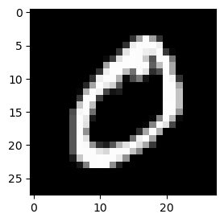

import torch
import torchvision
import matplotlib.pyplot as plt📘 Note Format Guide
This format serves as a structured guide for organizing lecture content, personal interpretation, experiments, and study-related questions.
| Type | What It Means | When I Use It |
|---|---|---|
| 📝 Lecture | Original material from the professor’s notes | When I’m referencing core concepts or provided code |
| 🗣️ In-Class Note | Verbal explanations shared during the lecture | When I want to record something the professor said in class but didn’t include in the official notes |
| ✍️ My Note | My thoughts, interpretations, or additional explanations | When I reflect on or explain something in my own words |
| 🔬 Experiment | Code I tried out or changed to explore further | When I test variations or go beyond the original example |
| ❓ Question | Questions I had while studying | When I want to revisit or research something more deeply |
📝 🗣️ ✍️ 🔬 ❓
1. 강의노트 원본 및 영상 링크
2. Imports 📝
plt.rcParams['figure.figsize'] = (4.5, 3.0)3. 데이터분석 코딩패턴 📝
# 복습
# ---
# 시벤코정리 - 다 맞출수있어 (train)
# 오버피팅 - 그게 의미가 없을텐데 (test 에서 잘하는게 의미가 있다)
# 드랍아웃 - 대충대충 학습하면 오히려 좋을지도 --> 이게 성공함 // 랜덤포레스트?
#----#
# GPU 메모리 아깝다.. (비싸거든)
# 그래서 확률적경사하강법
# 꼭 돈이 없어서 이 알고리즘을 만든것 같지만 그런건 아님
# 확률적경사하강법은 알고리즘 자체에 장점이 있음
# -- 장점1: 데이터를 조금씩쓰면서 update // 대충대충하는 느낌 ---> 오버핏을 눌러주는 효과 // 배깅?
# -- 장점2: global min 이 있고, local min 있을때, local min을 잘 탈출하는 효과가 있음 🗣️ 랜덤포레스트: node를 몇 개 선택하여 학습 / 배깅: obs를 몇 개 선택하여 학습
# 오늘할것: train/test 이 존재하는 데이터 셋팅에서 Dropout 레이어도 쓰고, 미니배치도 쓰고.. GPU도 쓰고.. A. 일반적인 train/test 셋팅
- Step1: 데이터정리
train_dataset = torchvision.datasets.MNIST(root='./data', train=True, download=True)
test_dataset = torchvision.datasets.MNIST(root='./data', train=False, download=True)
to_tensor = torchvision.transforms.ToTensor()
X0 = torch.stack([to_tensor(img) for img, lbl in train_dataset if lbl==0])
X1 = torch.stack([to_tensor(img) for img, lbl in train_dataset if lbl==1])
X = torch.concat([X0,X1],axis=0).reshape(-1,784)
y = torch.tensor([0.0]*len(X0) + [1.0]*len(X1)).reshape(-1,1)
XX0 = torch.stack([to_tensor(img) for img, lbl in test_dataset if lbl==0])
XX1 = torch.stack([to_tensor(img) for img, lbl in test_dataset if lbl==1])
XX = torch.concat([XX0,XX1],axis=0).reshape(-1,784)
yy = torch.tensor([0.0]*len(XX0) + [1.0]*len(XX1)).reshape(-1,1)🗣️(
X[0].shapetorch.Size([784])plt.imshow(X[0].reshape(28,28), cmap="gray")
print(y[0]) # label이 tensor 형태로 저장되어 있음tensor([0.])- X만 가지고 학습을 한 뒤 XX를 가지고 확인
X.shape, y.shape(torch.Size([12665, 784]), torch.Size([12665, 1]))XX.shape, yy.shape(torch.Size([2115, 784]), torch.Size([2115, 1])))🗣️
- Step2: 학습가능한 오브젝트들의 설정 (모델링과정 포함)
torch.manual_seed(43052)
net = torch.nn.Sequential(
torch.nn.Linear(784,32),
torch.nn.ReLU(), # (n,32)
torch.nn.Linear(32,1),
torch.nn.Sigmoid() # y는 0 또는 1
)
loss_fn = torch.nn.MSELoss()
optimizr = torch.optim.SGD(net.parameters()) # Adam은 너무 잘 맞춰서 SGD- Step3: 학습 (=적합)
for epoc in range(1,501):
#---에폭시작---#
# 1
yhat = net(X)
# 2
loss = loss_fn(yhat,y)
# 3
loss.backward()
# 4
optimizr.step()
optimizr.zero_grad()
#---에폭끝---#
#에폭마다 내가 보고싶은것들을 보여주는 코드
if (epoc % 50) ==0: # 50으로 나눈 나머지 = 0 => 50의 배수
acc = ((net(X).data > 0.5) == y).float().mean().item() # item: tensor -> float
print(f"# of epochs={epoc} \t train_acc = {acc:.4f}")# of epochs=50 train_acc = 0.4677
# of epochs=100 train_acc = 0.4677
# of epochs=150 train_acc = 0.4757
# of epochs=200 train_acc = 0.5295
# of epochs=250 train_acc = 0.6632
# of epochs=300 train_acc = 0.7929
# of epochs=350 train_acc = 0.8731
# of epochs=400 train_acc = 0.9206
# of epochs=450 train_acc = 0.9465
# of epochs=500 train_acc = 0.9634🗣️ 오버피팅 비판 가능성 존재
- Step4: 예측 & 결과분석
train acc
((net(X).data > 0.5) == y).float().mean()tensor(0.9634)test acc
((net(XX).data>0.5) == yy).float().mean()tensor(0.9749)🗣️ 실전에서 더 괜찮음
🗣️ Step4: acc, recall, F1 score, 시각화 등
#에폭마다 내가 보고싶은것들을 보여주는 코드
if (epoc % 50) ==0: # 50으로 나눈 나머지 = 0 => 50의 배수
acc = ((net(X).data > 0.5) == y).float().mean().item() # item: tensor -> float
Xval --> # train data 자체에서 test 데이터를 나누고 정확도를 비교하며 early stopping 할 수도 있음 (오버피팅 방지)
print(f"# of epochs={epoc} \t train_acc = {acc:.4f}")B. Dropout 사용
- Step1: 데이터정리
pass- Step2: 학습가능한 오브젝트들의 설정 (모델링과정 포함)
torch.manual_seed(43052)
net = torch.nn.Sequential(
torch.nn.Linear(784,32),
torch.nn.Dropout(0.9),
torch.nn.ReLU(),
torch.nn.Linear(32,1),
torch.nn.Sigmoid()
)
loss_fn = torch.nn.MSELoss()
optimizr = torch.optim.SGD(net.parameters())🗣️ 원래는 활성화 함수 다음이지만 ReLU 한정 전에도 사용 가능
- Step3: 학습 (=적합)
for epoc in range(1,501):
net.train()
#---에폭시작---#
# 1
yhat = net(X)
# 2
loss = loss_fn(yhat,y)
# 3
loss.backward()
# 4
optimizr.step()
optimizr.zero_grad()
#---에폭끝---#
net.eval()
#에폭마다 내가 보고싶은것들을 보여주는 코드
if (epoc % 50) ==0:
acc = ((net(X).data > 0.5) == y).float().mean().item()
print(f"# of epochs={epoc} \t train_acc = {acc:.4f}")# of epochs=50 train_acc = 0.4677
# of epochs=100 train_acc = 0.4677
# of epochs=150 train_acc = 0.4744
# of epochs=200 train_acc = 0.5215
# of epochs=250 train_acc = 0.6435
# of epochs=300 train_acc = 0.7675
# of epochs=350 train_acc = 0.8468
# of epochs=400 train_acc = 0.8978
# of epochs=450 train_acc = 0.9301
# of epochs=500 train_acc = 0.9492# of epochs=50 train_acc = 0.4677
# of epochs=100 train_acc = 0.4677
# of epochs=150 train_acc = 0.4757 # 위의 결과와 살짝 다름
# of epochs=200 train_acc = 0.5295
# of epochs=250 train_acc = 0.6632
# of epochs=300 train_acc = 0.7929
# of epochs=350 train_acc = 0.8731
# of epochs=400 train_acc = 0.9206
# of epochs=450 train_acc = 0.9465
# of epochs=500 train_acc = 0.9634- Step4: 예측 & 결과분석
train acc
((net(X).data > 0.5) == y).float().mean()tensor(0.9492)test acc
((net(XX).data>0.5) == yy).float().mean()tensor(0.9626)🗣️ 실전에서 더 괜찮음
C. GPU도 사용
- Step1: 데이터정리
pass- Step2: 학습가능한 오브젝트들의 설정 (모델링과정 포함)
torch.manual_seed(43052)
net = torch.nn.Sequential(
torch.nn.Linear(784,32),
torch.nn.Dropout(0.9),
torch.nn.ReLU(),
torch.nn.Linear(32,1),
torch.nn.Sigmoid()
).to("cuda:0")
loss_fn = torch.nn.MSELoss()
optimizr = torch.optim.SGD(net.parameters())- Step3: 학습 (=적합)
for epoc in range(1,501):
net.train()
#---에폭시작---#
X = X.to("cuda:0")
y = y.to("cuda:0")
# 1
yhat = net(X)
# 2
loss = loss_fn(yhat,y)
# 3
loss.backward()
# 4
optimizr.step()
optimizr.zero_grad()
#---에폭끝---#
net.eval()
#에폭마다 내가 보고싶은것들을 보여주는 코드
if (epoc % 50) ==0:
acc = ((net(X).data > 0.5) == y).float().mean().item()
print(f"# of epochs={epoc} \t train_acc = {acc:.4f}")# of epochs=50 train_acc = 0.4677
# of epochs=100 train_acc = 0.4677
# of epochs=150 train_acc = 0.4745
# of epochs=200 train_acc = 0.5223
# of epochs=250 train_acc = 0.6441
# of epochs=300 train_acc = 0.7686
# of epochs=350 train_acc = 0.8469
# of epochs=400 train_acc = 0.8979
# of epochs=450 train_acc = 0.9302
# of epochs=500 train_acc = 0.9492🗣️ 빠름
- Step4: 예측 & 결과분석
train acc
((net(X).data > 0.5) == y).float().mean()tensor(0.9492, device='cuda:0')test acc
# ((net(XX).data>0.5) == yy).float().mean() # net(XX)가 문제🗣️ XX를 GPU에 올리든가, net를 CPU에 내리든가
XX = XX.to("cuda:0")
yy = yy.to("cuda:0") ((net(XX).data>0.5) == yy).float().mean()tensor(0.9626, device='cuda:0')D. 미니배치도 사용
- Step1: 데이터정리
🗣️ 다시 CPU로 내림
X = X.to("cpu")
y = y.to("cpu")
XX = XX.to("cpu")
yy = yy.to("cpu")🗣️(
X.shapetorch.Size([12665, 784])ds = torch.utils.data.TensorDataset(X,y)
dl = torch.utils.data.DataLoader(ds,batch_size = 16) # for Xm, ym in dl: # m: 미니 배치
# print(Xm) # 하나하나가 미니배치# for Xm, ym in dl: # m: 미니 배치
# print(Xm.shape) # 결과: torch.Size([16, 784])ds = torch.utils.data.TensorDataset(X,y)
dl = torch.utils.data.DataLoader(ds,batch_size = 16, shuffle=True) # for Xm, ym in dl: # m: 미니 배치
# print(ym) # 섞여 있음# for Xm, ym in dl: # m: 미니 배치
# print(ym.shape) # 결과: torch.Size([16, 1]))🗣️
ds = torch.utils.data.TensorDataset(X,y)
dl = torch.utils.data.DataLoader(ds,batch_size = 16, shuffle=True) - Step2: 학습가능한 오브젝트들의 설정 (모델링과정 포함)
torch.manual_seed(43052)
net = torch.nn.Sequential(
torch.nn.Linear(784,32),
torch.nn.Dropout(0.9),
torch.nn.ReLU(),
torch.nn.Linear(32,1),
torch.nn.Sigmoid()
).to("cuda:0")
loss_fn = torch.nn.MSELoss()
optimizr = torch.optim.SGD(net.parameters())- Step3: 학습 (=적합)
- 🗣️
- X=X.to(“cuda:0”), y=y.to(“cuda:0”)를 할 수는 없으므로 미니배치 별로 GPU에 올림
- epoch을 500번씩 돌릴 필요는 없으므로 2번만 돌림
for epoc in range(1,3):
net.train()
#---에폭시작---#
for Xm,ym in dl:
Xm = Xm.to("cuda:0")
ym = ym.to("cuda:0")
# 1
ym_hat = net(Xm)
# 2
loss = loss_fn(ym_hat,ym)
# 3
loss.backward()
# 4
optimizr.step()
optimizr.zero_grad()
#---에폭끝---#
net.eval()
#에폭마다 내가 보고싶은것들을 보여주는 코드
s = 0
for Xm, ym in dl:
Xm = Xm.to("cuda:0")
ym = ym.to("cuda:0")
s = s + ((net(Xm) > 0.5) == ym).float().sum()
acc = s/12665
print(f"# of epochs={epoc} \t train_acc = {acc:.4f}")# of epochs=1 train_acc = 0.9860
# of epochs=2 train_acc = 0.9931🗣️ 다른 방법 (이렇게 하면 쉬움)
for epoc in range(1,3):
net.train()
net.gpu()
#---에폭시작---#
for Xm,ym in dl:
Xm = Xm.to("cuda:0")
ym = ym.to("cuda:0")
# 1
ym_hat = net(Xm)
# 2
loss = loss_fn(ym_hat,ym)
# 3
loss.backward()
# 4
optimizr.step()
optimizr.zero_grad()
#---에폭끝---#
net.eval()
net.to("cpu")
#에폭마다 내가 보고싶은것들을 보여주는 코드
acc = ((net(X).data > 0.5) == y).float().mean().item()
print(f"# of epochs={epoc} \t train_acc = {acc:.4f}")- 🗣️ 다른 방법 (net를 GPU로 유지하고 싶으면) => 강의안 코드
- mean 대신 sum
- 하나의 미니배치에서 맞은 것의 개수를 s에 계속 누적 시킴 (for문)
- for 문이 종료되고 s를 총 개수(X.shape)로 나누면 accuracy가 계산됨
- Step4: 예측 & 결과분석
🗣️(
# net(X) # error- net은 cuda에 있고 X는 cpu에 있음
- net을 cpu로 내릴 것인지, X를 cuda로 올릴 것인지 선택
- X를 cuda로 올리기 싫어서 미니배치를 사용하였으므로 net을 cpu로 내림
)🗣️
net.to("cpu")Sequential(
(0): Linear(in_features=784, out_features=32, bias=True)
(1): Dropout(p=0.9, inplace=False)
(2): ReLU()
(3): Linear(in_features=32, out_features=1, bias=True)
(4): Sigmoid()
)train acc
((net(X) > 0.5) == y).float().mean()tensor(0.9931)test acc
((net(XX) > 0.5) == yy).float().mean()tensor(0.9967)🗣️ test도 잘 나오므로 오버피팅 X
점점 비본질적인 코드가 늘어남 (=코드가 드럽다는 소리에요) –> Trainer의 개념 등장
- 🗣️
- 딥러닝 가지고 분석하면 –> 트레이너가 있는 다른 패키지를 써야함 (학부 수준)
- 파이토치 라이트닝
- 허깅페이스
- 연구할때는 파이토치 이해해야 함
- 딥러닝 가지고 분석하면 –> 트레이너가 있는 다른 패키지를 써야함 (학부 수준)